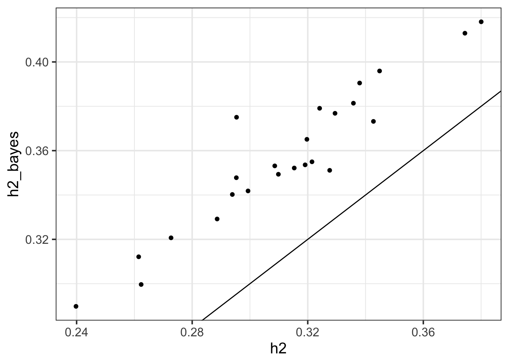
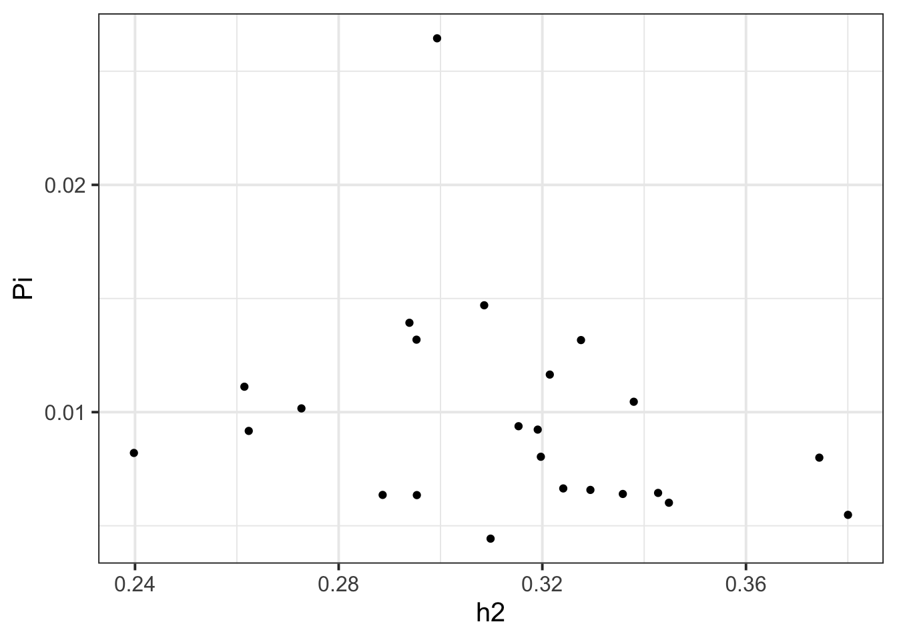
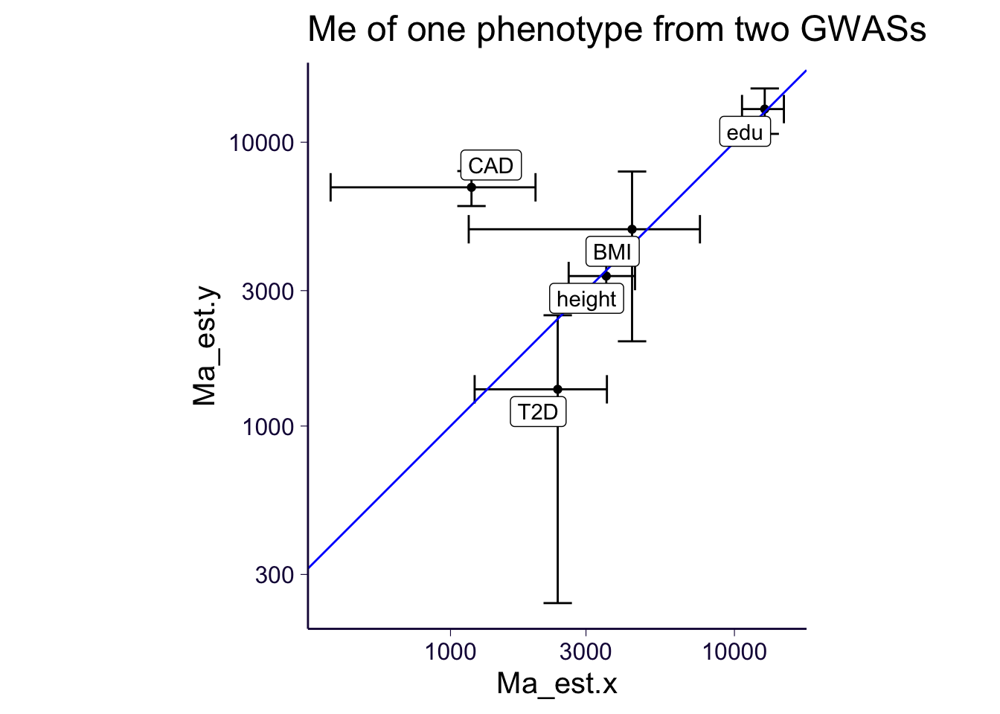
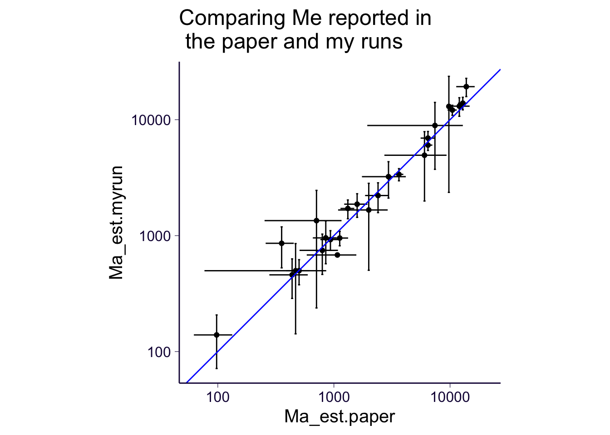
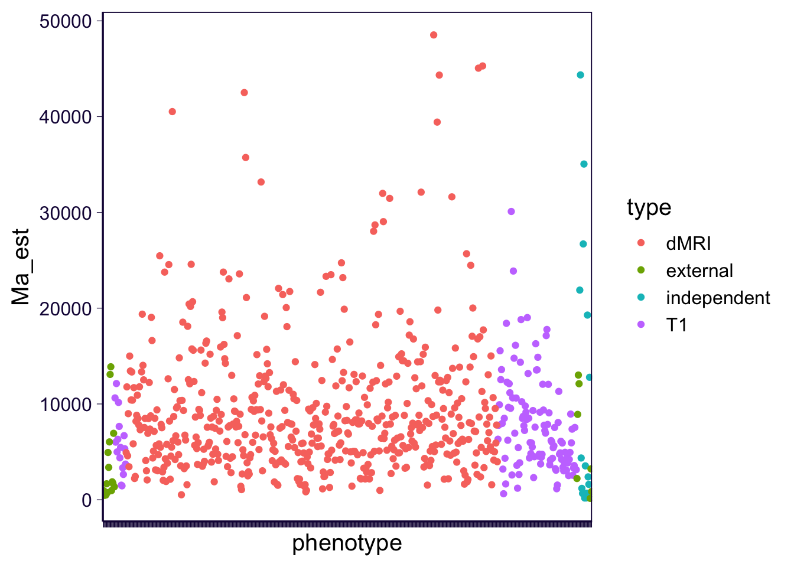
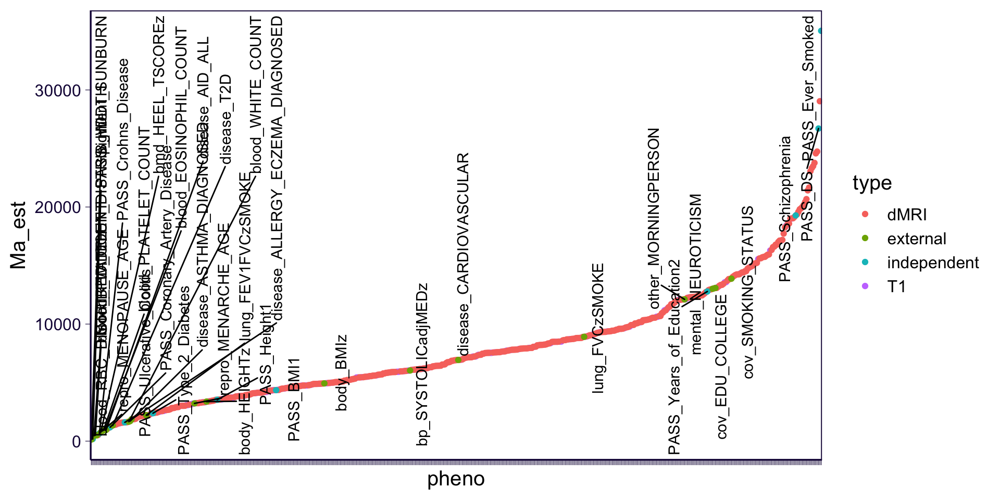

rm(list = ls())
library(ggplot2)
theme_set(theme_bw(base_size = 15))
source('https://gist.githubusercontent.com/liangyy/43912b3ecab5d10c89f9d4b2669871c9/raw/3ca651cfa53ffccb8422f432561138a46e93710f/my_ggplot_theme.R')
source('https://raw.githubusercontent.com/liangyy/misc-tools/master/plot_tool/plot_tools.R')
library(dplyr)
options(stringsAsFactors = F)
library(patchwork)
library(data.table)
options(datatable.fread.datatable = F)
source('rlib.R')
library(ggpubr)
library(pander)
panderOptions("table.split.table", Inf)Here we ran S-BayesS and SLD4M to estimate polygenicity of brain IDPs.
idps = read.delim2('../misc_data/supplementary_materials/supp_table_1.tsv', header = T) %>% mutate(IDP = paste0('IDP-', ukb_field), idp_type = t1_or_dmri) %>% select(IDP, idp_type)
dd = list()
for(i in 1 : nrow(idps)) {
fn = paste0('~/Desktop/tmp/ukb_idp/polygenicity/sbayess_', idps$idp_type[i], '/idp_hm3_', idps$IDP[i], '.parRes')
if(file.exists(fn)) {
tmp = read.table(fn, skip = 1)
if(!'R_GelmanRubin' %in% colnames(tmp)) {
tmp$R_GelmanRubin = NA
}
tmp$Par = rownames(tmp)
rownames(tmp) = NULL
dd[[length(dd) + 1]] = tmp %>% mutate(IDP = idps$IDP[i], idp_type = idps$idp_type[i])
}
}
dd = do.call(rbind, dd)type_list = list(dMRI = 'dmri.original.all_covar.w_pc', T1 = 't1.scaled.all_covar.w_pc')
dd2 = list()
for(i in 1 : nrow(idps)) {
fn = paste0('~/Desktop/tmp/ukb_idp/ld4m/', type_list[[idps$idp_type[i]]], '/', idps$IDP[i], '.sld4m_all.csv')
if(file.exists(fn)) {
tmp = read.csv(fn)
dd2[[length(dd2) + 1]] = tmp %>% mutate(IDP = idps$IDP[i], idp_type = idps$idp_type[i])
}
}
dd2 = do.call(rbind, dd2)
dd2_sub = dd2 %>% filter(Var1 == 'Manual_aggregated')Load external/independent GWAS results.
ind = read.table('../misc_data/ld4m/ld4m_indep_gwas.txt')$V1
dd3 = list()
for(i in ind) {
fn = paste0('~/Desktop/tmp/ukb_idp/ld4m/indep_gwas/', i, '.sld4m_all.csv')
if(!file.exists(fn)) {
next
}
tmp = read.csv(fn)
dd3[[length(dd3) + 1]] = tmp %>% mutate(phenotype = i, type = 'independent')
}
ext = read.table('../misc_data/ld4m/ld4m_external_traits.txt')$V1
for(i in ext) {
fn = paste0('~/Desktop/tmp/ukb_idp/ld4m/external_gwas/', i, '.sld4m_all.csv')
if(!file.exists(fn)) {
next
}
tmp = read.csv(fn)
dd3[[length(dd3) + 1]] = tmp %>% mutate(phenotype = i, type = 'external')
}
dd3 = do.call(rbind, dd3)
ss = read.table('../misc_data/ld4m/sample_size.txt', header = T)
dd3_sub = dd3 %>% filter(Var1 == 'Manual_aggregated')
dd3_sub = left_join(dd3_sub, ss, by = c('phenotype' = 'trait'))df1 = read.table('~/Desktop/tmp/ukb_idp/heritability_2nd_round/dmri.original.all_covar.w_pc.tsv.gz', header = T)
df2 = read.table('~/Desktop/tmp/ukb_idp/heritability_2nd_round/t1.scaled.all_covar.w_pc.tsv.gz', header = T)
df = rbind(
df1 %>% mutate(idp_type = 'dMRI'),
df2 %>% mutate(idp_type = 'T1')
)conv_cutoff = 1.2
dd %>% filter(!is.na(R_GelmanRubin), Par == 'Pi') %>% group_by(idp_type) %>%
summarize(
nidp_finished = n(),
nidp_converged = sum(R_GelmanRubin < conv_cutoff)
) %>% pander::pander()## `summarise()` ungrouping output (override with `.groups` argument)| idp_type | nidp_finished | nidp_converged |
|---|---|---|
| dMRI | 4 | 1 |
| T1 | 47 | 23 |
Focus on converged results.
dd_conv = dd %>% filter(!is.na(R_GelmanRubin), Par == 'Pi') %>% filter(R_GelmanRubin < conv_cutoff) %>% rename(Pi = Mean)
dd_conv = dd_conv %>% left_join(df, by = c('IDP' = 'phenotype', 'idp_type'))
dd_conv = dd_conv %>% left_join(dd %>% filter(Par == 'hsq') %>% rename(h2_bayes = Mean), by = c('IDP', 'idp_type'))
dd_conv %>% ggplot() + geom_point(aes(x = h2, y = h2_bayes)) + geom_abline(slope = 1, intercept = 0)
dd_conv %>% ggplot() + geom_point(aes(x = h2, y = Pi)) 
Define a stable estimate as Me > 0 and Me > Me_err.
dd2_sub = dd2_sub %>% mutate(stable = !is.na(Ma_est) & Ma_est > Ma_err & Ma_est > 0) %>% mutate(stable2 = !is.na(Ma_est) & Ma_est > 1.96 * Ma_err & Ma_est > 0)
dd3_sub = dd3_sub %>% mutate(stable = !is.na(Ma_est) & Ma_est > Ma_err & Ma_est > 0) %>% mutate(stable2 = !is.na(Ma_est) & Ma_est > 1.96 * Ma_err & Ma_est > 0)
message(mean(dd2_sub$stable, na.rm = T), ' of brain IDPs have stabled estimate')## 0.792565947242206 of brain IDPs have stabled estimatemessage(mean(dd3_sub$stable, na.rm = T), ' of external/independent GWASs have stabled estimate')## 0.975 of external/independent GWASs have stabled estimatedd2_sub %>% group_by(idp_type) %>% summarize(mean(stable, na.rm = T)) %>% pander::pander()## `summarise()` ungrouping output (override with `.groups` argument)| idp_type | mean(stable, na.rm = T) |
|---|---|
| dMRI | 0.7881 |
| T1 | 0.8113 |
message(mean(dd2_sub$stable2, na.rm = T), ' of brain IDPs have Ma_est > 1.96 Ma_err > 0 estimate')## 0.612709832134293 of brain IDPs have Ma_est > 1.96 Ma_err > 0 estimatemessage(mean(dd3_sub$stable2, na.rm = T), ' of external/independent GWASs have Ma_est > 1.96 Ma_err > 0 estimate')## 0.875 of external/independent GWASs have Ma_est > 1.96 Ma_err > 0 estimatedd2_sub %>% group_by(idp_type) %>% summarize(mean(stable2, na.rm = T)) %>% pander::pander()## `summarise()` ungrouping output (override with `.groups` argument)| idp_type | mean(stable2, na.rm = T) |
|---|---|
| dMRI | 0.603 |
| T1 | 0.6541 |
Compare external vs independent.
map = list(
height = c('PASS_Height1', 'body_HEIGHTz'),
BMI = c('PASS_BMI1', 'body_BMIz'),
edu = c('PASS_Years_of_Education2', 'cov_EDU_COLLEGE'),
T2D = c('PASS_Type_2_Diabetes', 'disease_T2D'),
CAD = c('PASS_Coronary_Artery_Disease', 'disease_CARDIOVASCULAR')
)
df_pair = list()
for(i in names(map)) {
k1 = map[[i]][1]
k2 = map[[i]][2]
if(sum(map[[i]] %in% dd3_sub$phenotype[dd3_sub$stable]) < 2) {
next
}
df_pair[[length(df_pair) + 1]] = inner_join(
dd3_sub %>% filter(phenotype == k1) %>% select(Ma_est, Ma_err, mean_sample_size) %>% mutate(pheno = i),
dd3_sub %>% filter(phenotype == k2) %>% select(Ma_est, Ma_err, mean_sample_size) %>% mutate(pheno = i), by = 'pheno'
)
}
df_pair = do.call(rbind, df_pair)
df_pair %>% ggplot() +
geom_point(aes(x = Ma_est.x, y = Ma_est.y)) +
geom_errorbar(aes(x = Ma_est.x, ymax = Ma_est.y + 1.96 * Ma_err.y, ymin = Ma_est.y - 1.96 * Ma_err.y), width = .1) +
geom_errorbarh(aes(y = Ma_est.y, xmax = Ma_est.x + 1.96 * Ma_err.x, xmin = Ma_est.x - 1.96 * Ma_err.x), height = .1) +
scale_x_log10() + scale_y_log10() + coord_equal() + th + geom_abline(slope = 1, intercept = 0, color = 'blue') + ggtitle('Me of one phenotype from two GWASs') + ggrepel::geom_label_repel(aes(x = Ma_est.x, y = Ma_est.y, label = pheno))
df_pair %>% pander::pander()| Ma_est.x | Ma_err.x | mean_sample_size.x | pheno | Ma_est.y | Ma_err.y | mean_sample_size.y |
|---|---|---|---|---|---|---|
| 3536 | 474 | 131547 | height | 3377 | 206.9 | 458303 |
| 4360 | 1633 | 122033 | BMI | 4936 | 1504 | 457824 |
| 12785 | 1097 | 328917 | edu | 13085 | 1217 | 454813 |
| 2386 | 596.7 | 60786 | T2D | 1347 | 566 | 459324 |
| 1185 | 411.8 | 77210 | CAD | 6936 | 498.7 | 459324 |
Compare with paper.
parse_number = function(xx) {
tmp = stringr::str_match(xx, '([0-9\\.]+) \\(([0-9\\.]+)\\)')
return(list(est = as.numeric(tmp[, 2]), se = as.numeric(tmp[, 3])))
}
dmap = readRDS('../misc_data/ld4m/ld4m_map.rds')
oo = parse_number(dmap$log10MeCommon)
dmap$Ma_est = 10 ^ oo$est
dmap$Ma_err = (10 ^ (oo$est + oo$se) - 10 ^ (oo$est - oo$se)) / 2
dmap = dmap %>% inner_join(dd3_sub %>% select(Ma_est, Ma_err, phenotype, stable) %>% filter(stable == T), by = c('FILE' = 'phenotype'), suffix = c('.paper', '.myrun'))
dmap %>% ggplot() +
geom_point(aes(x = Ma_est.paper, y = Ma_est.myrun)) +
geom_errorbar(aes(x = Ma_est.paper, ymax = Ma_est.myrun + 1.96 * Ma_err.myrun, ymin = Ma_est.myrun - 1.96 * Ma_err.myrun)) +
geom_errorbarh(aes(y = Ma_est.myrun, xmax = Ma_est.paper + 1.96 * Ma_err.paper, xmin = Ma_est.paper - 1.96 * Ma_err.paper)) +
scale_x_log10() + scale_y_log10() + coord_equal() + th + geom_abline(slope = 1, intercept = 0, color = 'blue') +
ggtitle('Comparing Me reported in \n the paper and my runs')## Warning in self$trans$transform(x): NaNs produced## Warning: Transformation introduced infinite values in continuous y-axis## Warning in self$trans$transform(x): NaNs produced## Warning: Transformation introduced infinite values in continuous x-axis## Warning: Removed 1 rows containing missing values (geom_errorbar).## Warning: Removed 1 rows containing missing values (geom_errorbarh).
tmp = rbind(
dd2_sub %>% filter(stable) %>% select(idp_type, IDP, Ma_est, Ma_err) %>% rename(type = idp_type, phenotype = IDP),
dd3_sub %>% filter(stable) %>% select(type, phenotype, Ma_est, Ma_err) # %>% mutate(type = 'other phenotypes')
)
tmp %>% ggplot() + geom_point(aes(x = phenotype, y = Ma_est, color = type)) + theme(axis.text.x = element_blank()) + th2
tmp2 = tmp %>% filter(Ma_est > Ma_err * 1.96) %>% mutate(pheno = factor(phenotype, levels = phenotype[order(Ma_est)]))
tmp2 %>% ggplot() +
geom_point(aes(x = pheno, y = Ma_est, color = type)) + theme(axis.text.x = element_blank()) + th2 + ggrepel::geom_text_repel(data = tmp2 %>% filter(!type %in% c('T1', 'dMRI')), aes(x = pheno, y = Ma_est, label = pheno), angle = 90, force = 5)